支持chrome，firefox。edge能跑，但是速度有点慢，而且官方不保证以后也能运行。
主界面
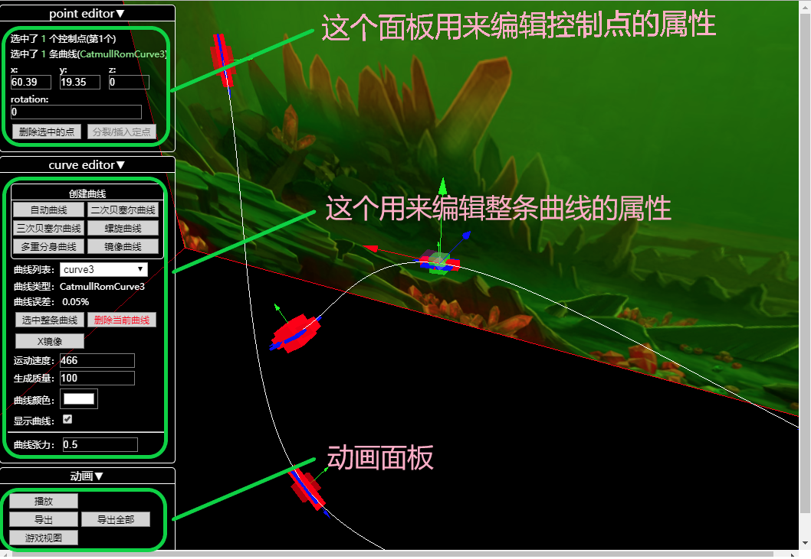
请尝试一下使用拖动鼠标左右键以及滚轮来控制、改变3D的视口。
编辑控制点
|
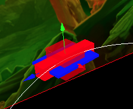
|
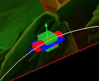
|
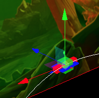
|
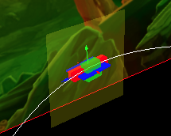
|
| 未选中节点 |
选中节点（注意中间变成绿色，已经整个节点变小了） |
3d移动控制器 |
2d移动控制器 |
几点说明
- 鼠标点击可以选中节点。可以尝试按住ctrl或shift进行多选。（请仔细体会ctrl和shift的差别）
- 快捷键Q、W、E用来切换上图的2，3，4控制器状态。ESC键清空所有选择
- 请自行尝试体会2d移动控制器和3d移动控制器的使用
- 请观察第一张图：
蓝色箭头表示鱼头方向，
绿色箭头表示鱼背的方向。 请记住这个设定：
R
G
B=XYZ
面板
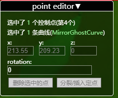
- 当选中一个或多个控制点的时候会出现这个面板的内容
- 注意：
本编译器中所有输入数字的文本框，都可以用鼠标点住并上下拖动来改变数值
- 头两行是告诉你当前选中了什么
- xyz是当前选中控制点的坐标。选中多个点的时候，如果“它们”数值相同，则显示这个数值；如果“它们”数值不同，则显示--。这时候仍然可以拖动鼠标改变它们的相对数值，或者直接输入数值让它们变成一样的数值。
什么是rotation
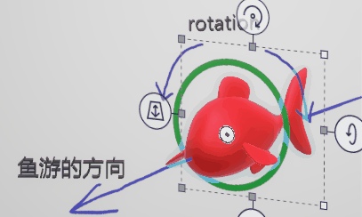正常情况下鱼的旋转（姿势，rotation）需要有三个自由度让你选择。 但是为了简化编辑只给你一个自由度控制，其它的由系统根据曲线的方向自动算出。
rotation参数取值为[-180,180]。 当rotation为0的时候，鱼是什么姿势由曲线决定。因为虽然正常情况下，rotation为0的时候，鱼背应该向上，但是考虑一下鱼如果垂直朝上游，那么背面应该朝东南西北哪个方向呢？
关于下面两个按钮
- 不是任何时候都可用。灰色代表不可用。
- 插入定点一般需要同时选中2个相邻的控制点才能够使用
编辑曲线
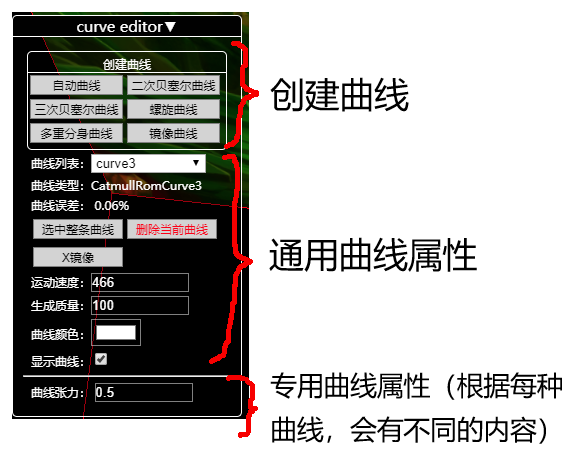
- 创建曲线后面说明
- 选中一条曲线的任意控制点，表示选中了这条曲线
- 曲线列表：表示当前选中的曲线，如果选中了多条曲线会显示成--。使用这个下拉列表框，会选中这条曲线的所有控制点。
- 曲线类型：看看就好。
- 曲线误差：表示当曲线转换成折线段的时候，线段直接长度的差异。理想情况下，每条线段是一样长的，那样动画播放才能是匀速的。
- 运动速度：鱼在这条曲线上游动的速度。和播放动画和导出有关。和曲线本身形态无关。
- 生成质量：如果调低的话，会看到“曲线误差”会变大。一般情况下，如果除非编辑器运行变得很慢影响了性能，不需要改变它。
- 曲线颜色：顾名思义
- 曲线显示：顾名思义。隐藏的曲线可以通过上面的“曲线列表”来选中它
- 选中整条曲线：选中这条曲线上所有的点。
- 删除当前曲线：顾名思义。为了防止误操作，不支持同时删除多条曲线
- X镜像：把曲线左右上下颠倒一下
下面是几种曲线的说明
自动曲线
自动平滑的曲线。可以设置“张力”来改变弯曲的程度。
|
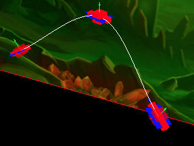
|
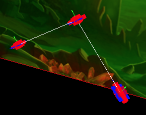
|
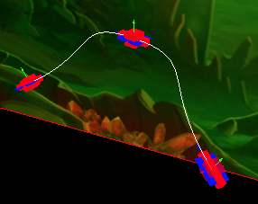
|
| 张力：0.5 |
张力：0 |
张力：1 |
二次贝塞尔曲线
注意方块的辅助控制点，以及黄色的辅助线
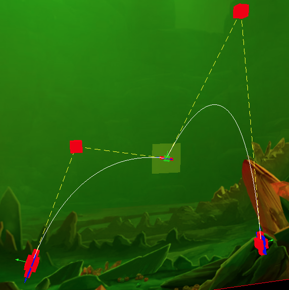
三次贝塞尔曲线
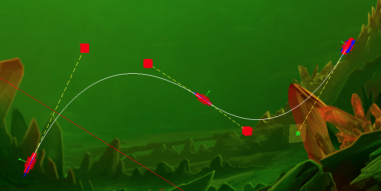
多重分身曲线
和另一条曲线绑定，生成它的分身。暂时没什么用，因为动画和导出都不能正确支持它
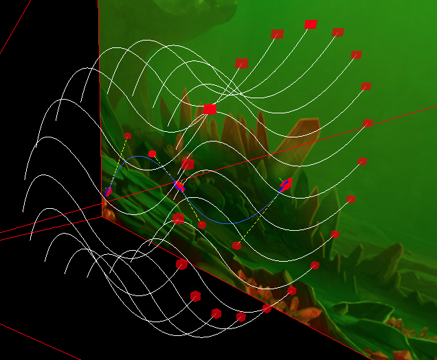
镜像曲线
和另一条曲线绑定，对它镜像左右上下镜像。注意：曲线上的控制点是不能调整的，只为了让你参考鱼在曲线上姿势。有个选项“翻转背部朝向”，可以尝试一下
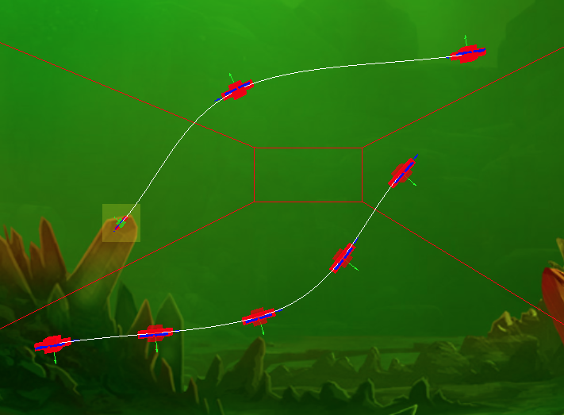